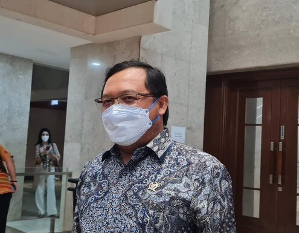

|
Minggu, 20 Maret 2022 05:53 WIB  Jakarta - Fraksi PKS DPR mengusulkan hak angket dan pembentukan panitia khusus (pansus) terkait polemik kelangkaan dan harga minyak goreng yang mahal. Partai Demokrat (PD) masih mendalami keefektifan langkah tersebut. Anggota Komisi VI DPR Fraksi Demokrat Herman Khaeron mengatakan terkait pembentukan pansus sudah pernah disuarakan saat rapat gabungan. "Pembentukan pansus dan opsi sudah saya suarakan pada waktu rapat gabungan komisi IV, VI, dan VII yang dipimpin Pak Rachmat Gobel, karena ada syarat dapat terbentuknya pansus, maka saya juga mengusulkan rapat konsultasi pimpinan DPR dengan presiden atau pembentukan panja di setiap komisi dengan topik yang sama," kata Herman kepada wartawan, Sabtu (19/3/2022). Terkait hak angket, Herman mengatakan Demokrat akan mendalami terlebih dahulu. Pihaknya akan mempertimbangkan betul agar tidak salah langkah. "Jika memang pansus/hak angket menjadi pilihan untuk menemukan solusi yang komprehensif, tentu kami akan mendalaminya agar tidak salah melangkah dan benar-benar melahirkan solusi terbaik bagi rakyat," ujarnya. "Memang jika melihat keadaanya, pansus/hak angket menjadi pilihan agar bisa mengurai permasalahan dan menemukan solusi," lanjutnya. Meski begitu, Herman tidak yakin dengan langkah tersebut karena kerap tidak ada tindak lanjut dari pimpinan DPR. "Pengalaman di era DPR saat ini, usulan pansus kandas di pimpinan dan tidak ada keberlanjutanya," ujarnya. F-PKS Usul Hak AngketFraksi PKS DPR sebelumnya mengusulkan penggunaan hak angket DPR terkait kelangkaan dan harga minyak goreng yang mahal. PKS juga mendorong DPR membentuk panitia khusus angket. Ketua Fraksi PKS Jazuli Juwaini membeberkan alasan pengusulan tersebut. Salah satunya, adanya indikasi pelanggaran undang-undang yang berimplikasi politik maupun hukum. "Berbulan-bulan rakyat berteriak di mana-mana soal kelangkaan dan tingginya harga minyak goreng. Sayangnya pemerintah seperti angkat 'bendera putih'. Menteri Perdagangan jelas mengatakan tidak bisa mengontrol harga minyak goreng akibat ulah mafia. Kebijakan pemerintah mencabut HET justru melambungkan harga minyak goreng tanpa kontrol di pasaran. Ini menunjukkan negara telah gagal," kata Jazuli, Jumat (18/3). |